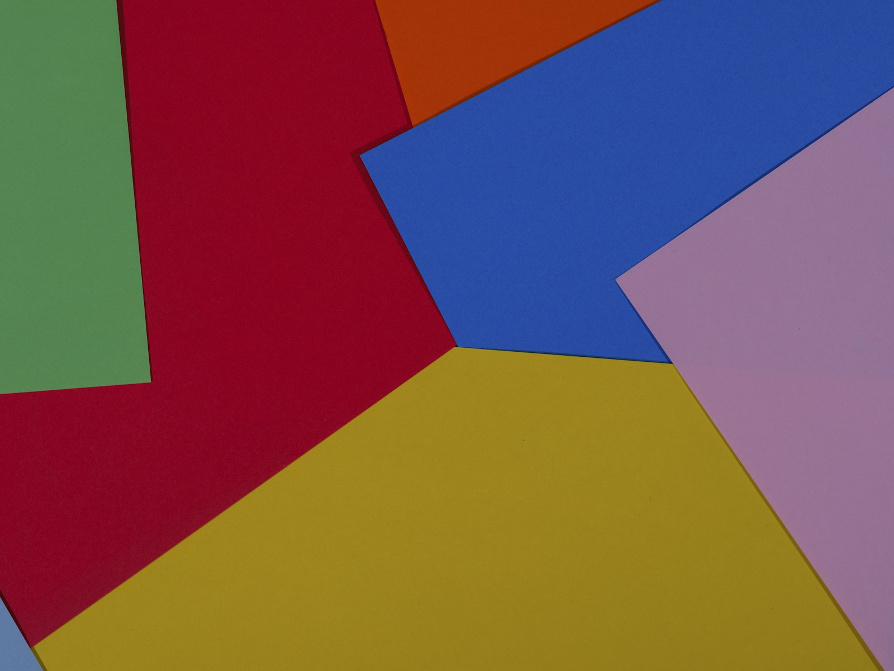
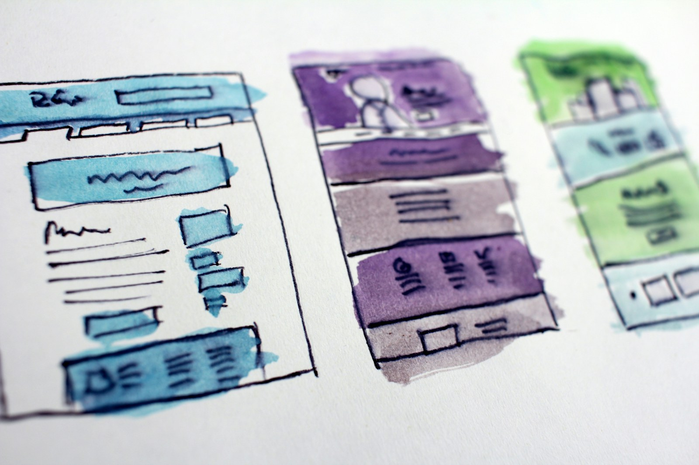

Conceptos de CSS para diseñar páginas web :)
Introducción a CSS
Esta página explica los fundamentos de CSS, sus formas de incorporación y las herramientas que adaptan un diseño a distintos tamaños de pantalla.
Ver la sintaxisReglas y selectores
Propiedad y valorTres formas de CSS
Externo, interno y en líneaDiseño responsive
De celular a escritorioNueve temas
Del 2.1 al 2.9Contenido principal
Fundamentos
Sintaxis y formas de usoOrganización
Herencia y especificidadResponsive
Flexbox, Grid y breakpoints
Selectores y capas
Pseudo-clases, elementos y z-indexUna regla CSS empieza con un selector, que elige el elemento. Dentro de las llaves van las declaraciones. Cada declaración tiene una propiedad, dos puntos, un valor y normalmente termina en punto y coma.
h1 {
color: rebeccapurple;
font-size: 2rem;
}h1 es el selector, color es la propiedad y rebeccapurple es el valor.
Las tres formas son válidas. En una web con varias páginas suele recomendarse el archivo externo porque permite reutilizar los mismos estilos.
Externo
Las reglas quedan en un archivo .css que se puede reutilizar.
<link rel="stylesheet" href="index.css">
Interno
Se escribe dentro de <style> en el <head>. Puede servir para una prueba corta.
<style> p { color: purple; } </style>
En línea
Va en un solo elemento y mezcla el contenido con la presentación.
<p style="color: purple;">Texto</p>
La indentación no suele cambiar el resultado, pero deja claro qué declaraciones pertenecen a cada regla. Los comentarios CSS se escriben entre /* y */.
Algunas propiedades pasan del padre a sus hijos. color suele heredarse; border normalmente no.
/* color para toda esta parte */
.aviso {
color: darkred;
}Cuando varias reglas cambian la misma propiedad, se compara su peso. En general: estilo en línea, ID, clase o pseudo-clase y, por último, etiqueta o pseudo-elemento.
Si dos selectores tienen el mismo peso, gana el que aparece después.
p < .nota < #introduccion
La página se tiene que adaptar
Lo que hace Bootstrap aquí
Una clase sin breakpoint se aplica desde el tamaño más pequeño. Después se añaden cambios con sm, md, lg, xl o xxl.
Por ejemplo, col-12 col-lg-6 ocupa toda la fila en celular y la mitad desde lg.
Flexbox
Organiza elementos en una dimensión: una fila o una columna. Ayuda a alinear, centrar y repartir espacio.
CSS Grid
Trabaja en dos dimensiones, así que controla filas y columnas al mismo tiempo.
El grid normal de Bootstrap usa 12 columnas y está construido con Flexbox. Se arma con container, row y col-*.
<div class="row">
<div class="col-12 col-lg-6">Uno</div>
<div class="col-12 col-lg-6">Dos</div>
</div>Breakpoints: xs < 576 · sm ≥ 576 · md ≥ 768 · lg ≥ 992 · xl ≥ 1200 · xxl ≥ 1400
Una media query aplica reglas solamente cuando se cumple una condición, como el ancho mínimo de la pantalla.
.titulo {
font-size: 2rem;
}
@media (min-width: 768px) {
.titulo {
font-size: 3rem;
}
}Bootstrap ya incluye estas condiciones en clases como d-none d-md-block o text-center text-md-start.
Dos puntos, dos puntos dobles y capas

Seleccionan una parte concreta de un elemento. Se escriben normalmente con dos puntos dobles. ::before y ::after pueden crear contenido decorativo.
.nota::before {
content: "𝐒𑁤 ❤︎ 𑣲𝑨";
}
Seleccionan un estado o una posición. :hover responde al puntero, :focus al elemento activo y :first-child al primer hijo.
a:hover {
color: crimson;
}
input:focus {
border-color: purple;
}Decide qué elemento queda delante cuando varios se superponen. Un número mayor sube la capa, pero se compara dentro de su contexto de apilamiento.
position: relative;z-index: 3;
Pruebas de columnas y capas
col-lg-6 por col-lg-4 permite observar cómo se reparten las columnas.z-1 y z-3 en dos elementos posicionados permite comprobar cuál queda delante.Fuentes de consulta